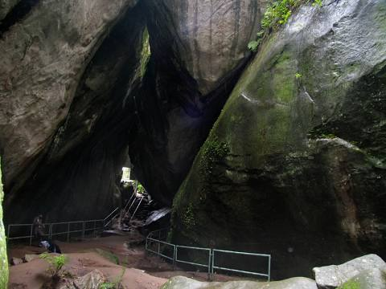
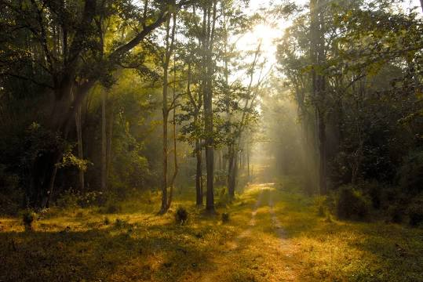
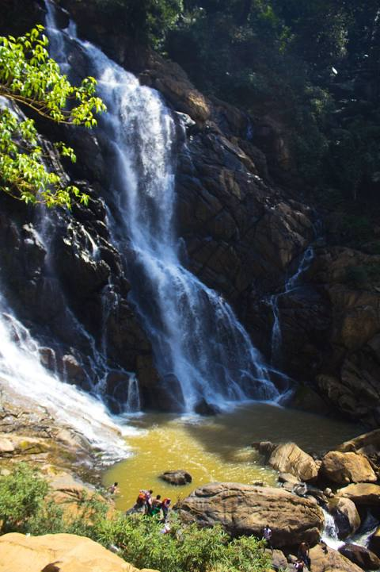

Edakkal Caves
Edakkal Caves are two natural caves at a remote location at Edakkal, 25 km from Kalpetta in the Wayanad district of Kerala in India's Western Ghats. They lie 1,200 m above sea level on Ambukutty Mala, near an ancient trade route connecting the high mountains of Mysore to the ports of the Malabar coast.
Wayanad Wildlife Sanctuary
Wayanad Wildlife Sanctuary is a wildlife sanctuary in Wayanad, Kerala, India with an extent of 344.44 km² and four hill ranges namely Sulthan Bathery, Muthanga, Kurichiat and Tholpetty. A variety of large wild animals such as gaur, Asian elephant, deer and tiger are found there.
Banasura Sagar Dam

Banasura Sagar Dam, which impounds the Karamanathodu tributary of the Kabini River, is part of the Indian Banasurasagar Project consisting of a dam and a canal project started in 1979. The goal of the project is to support the Kakkayam Hydro electric power project and satisfy the demand for irrigation and drinking water in a region known to have water shortages in seasonal dry periods.
Soochipara Waterfalls
Soochipara Falls also known as Sentinel Rock Waterfalls is a three-tiered waterfall in Vellarimala, Wayanad, India. It is surrounded by deciduous, evergreen and montane forests. Locally referred to as Soochipara, the 15-20 minute drive from Meppadi to Sentinel Rock Waterfalls has views of a number of Wayanad's tea estates.